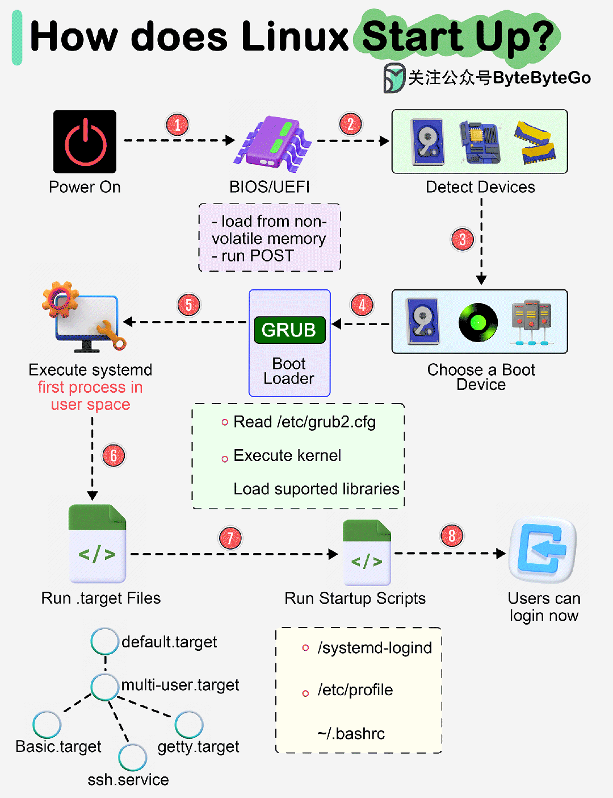

Linux开机全过程
- 当计算机开机时，首先会进行基本输入输出系统（BIOS）自检。BIOS会检查计算机硬件是否工作正常，并确定启动设备（通常是硬盘）。然后，BIOS将启动设备的第一个扇区（即主引导记录MBR）加载到内存中的特定位置，准备执行引导加载程序。
- ：引导加载程序是计算机开机后运行的第一个程序，其主要任务是将Linux内核加载到内存中。常见的Linux引导加载程序有GRUB（Grand Unified Bootloader）和LILO（Linux Loader）等。引导加载程序会提供一个菜单，允许用户选择要启动的Linux内核版本或其他操作系统。选定内核后，引导加载程序会将内核映像文件加载到内存中，并跳转到内核的入口点开始执行。
- Linux内核启动后，会进行一系列初始化工作，包括设置CPU的保护模式、初始化内存管理、初始化硬件设备、加载和初始化必要的内核模块、挂载根文件系统等。这些初始化工作为后续的系统运行提供了稳定的环境。
- Linux内核启动完成后，会启动第一个用户空间进程——init进程（PID为1）。init进程负责完成系统的初始化工作，包括读取并解析inittab文件（或现在常用的systemd服务），确定系统运行级别和要启动的服务；启动必要的系统服务；建立终端和控制台；运行登录程序，等待用户登录。
- 当init进程完成系统初始化后，会运行登录程序（如getty或sshd），等待用户输入用户名和密码进行登录。登录成功后，用户会进入到一个shell环境（如bash），可以在这里执行各种命令和操作。对于图形界面的Linux系统，登录程序会启动显示管理器（如GDM、LightDM等），然后由显示管理器加载桌面环境（如GNOME、KDE等）。